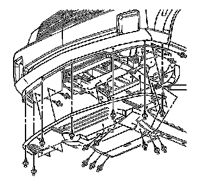
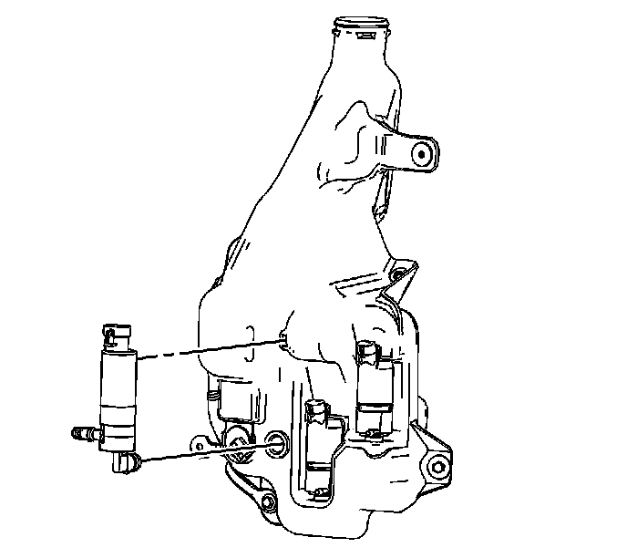
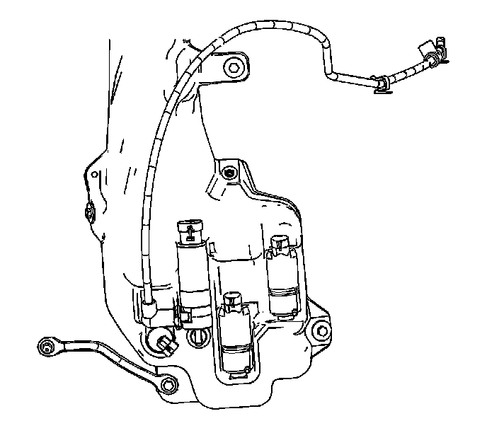

Headlamp Washer Pump: Service and Repair
Headlamp Washer Pump Replacement
Removal Procedure

1. Remove the lower air deflector. Refer to Front Air Deflector Replacement (Service and Repair) .
2. Remove the passenger side front wheelhouse liner.
3. Drain the washer solvent container.
4. Disconnect the washer hose from the rearward washer pump.
5. Disconnect the electrical connector from the rearward washer pump.
6. Hold the top of the washer pump with one hand and use a flat-bladed tool in order to pry the pump from the washer solvent container.

7. Remove the washer pump from the washer solvent container.
8. Remove and discard the washer pump grommet.
Installation Procedure
1. Install the washer pump grommet into the washer solvent container.
2. Lubricate the washer pump intake nozzle with clean water to aid in the installation of the pump into the washer container.
3. Install the washer pump nozzle in the washer solvent container by snapping into place.
4. Ensure the washer pump is secure to the washer solvent container.

5. Connect the electrical connector to the washer pump.
6. Connect the washer hose to the washer pump.
7. Install the passenger side front wheelhouse liner.
8. Install the lower air deflector. Refer to Front Air Deflector Replacement (Service and Repair) .
9. Open the hood.
10. Fill the washer solvent container.
11. Close the hood.